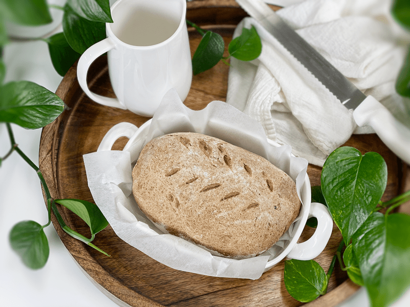
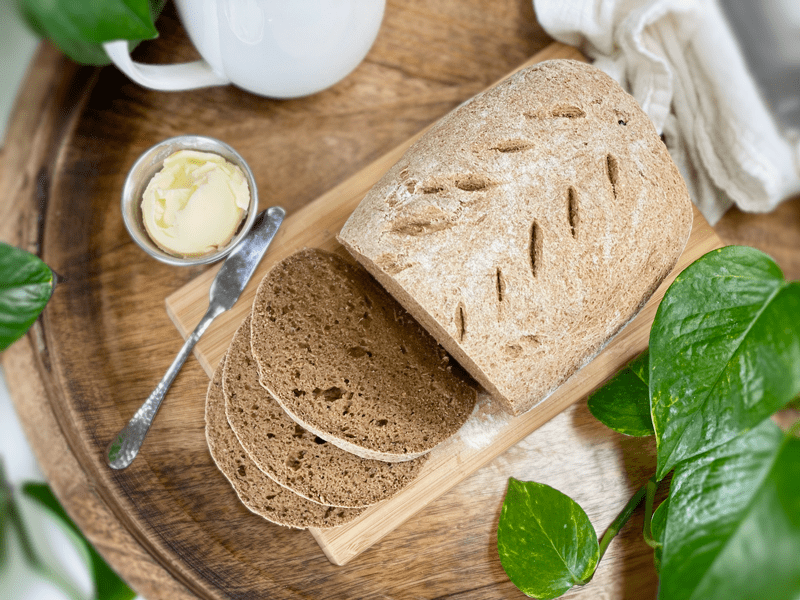
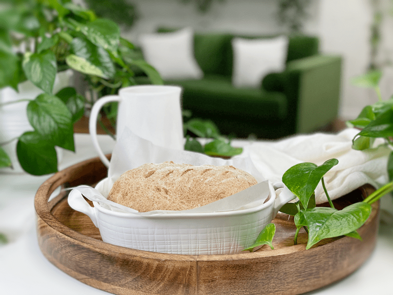
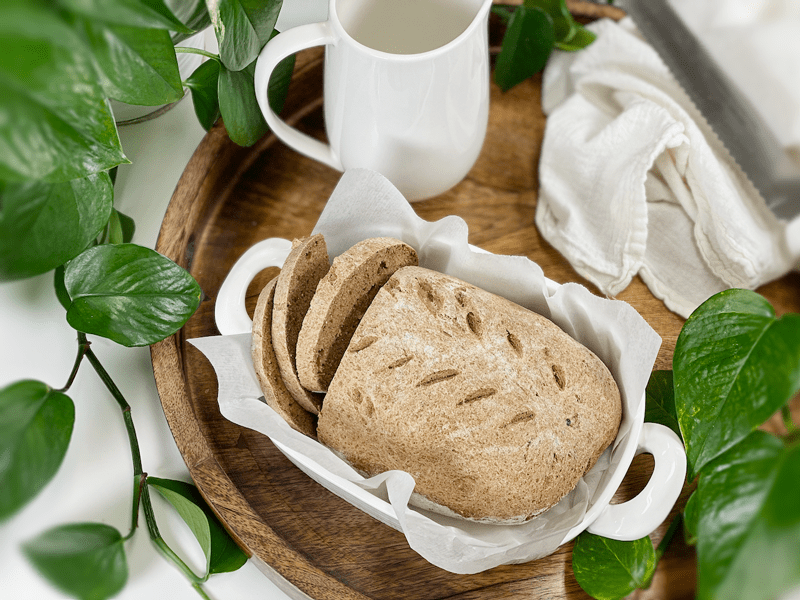
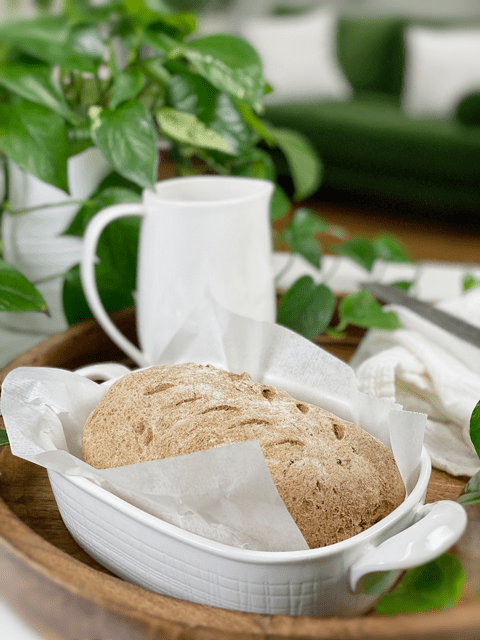

Bread Gone A-Rye | Baked | Vegan | Gluten-Free | Oil-Free | Nut-Free
I hope the title of this bread brings you a giggle, because it struck my funny bone. Calling this bread “rye” just wouldn’t be truthful since I didn’t use rye flour (due to the gluten content). Instead, I relied on a delightful collection of German bread spices known as Brotgewürz and another secret ingredient. This beauty is gluten-free, vegan, oil-free, yeast-free, and doesn’t contain any nuts. Does that sound like it will fit your dietary needs?

As I mentioned above, I used a combination of toasted spices to create this delicious and aromatic bread: caraway, coriander, fennel, and anise seeds. This bread spice mixture is often used in southern Germany, Austria, and Switzerland, as well as the South Tyrol province in Italy.
If you are familiar with German Landbrot (farmers bread), my bread is reminiscent of it: heavy, dense, with a crunchy crust, although the ingredients I use are not traditional…but to be honest, there isn’t much about my recipes that is “traditional.” I have to “think outside of loaf” to create breads that fit our dietary needs. Let’s do a quick run-through on the spices I used…

Coriander Seeds
- These little round beige seeds are big in flavor: citrusy, fresh, woody, and floral.
- They come from the flower of the cilantro plant, although they taste hardly anything like their leafy counterpart.
- Health Benefit: Coriander is rich in immune-boosting antioxidants, which have been shown to fight inflammation in your body.
Caraway Seeds
- Caraway has a sharp, stimulating aroma and is sometimes confused with fennel or cumin. Its flavor has a nutty, bittersweet sharpness with a hint of citrus and anise.
- Health Benefit: Caraway is used for digestive problems including heartburn, bloating, gas, loss of appetite, and mild spasms of the stomach and intestines.

Anise Seeds
- Anise seed is sold whole or ground and has a distinctive taste that most describe as similar to black licorice.
- Health Benefit: Anise seeds have anti-fungal, antibacterial, and anti-inflammatory properties and may fight stomach ulcers, keep blood sugar levels in check, and reduce symptoms of depression and menopause.
Fennel Seeds
- These little pale-green pods have a strong taste of licorice and anise.
- Health Benefit: Components found in fennel seeds work to stimulate the secretion of digestive and gastric juices while reducing inflammation in the stomach and intestines.

Toasting the Spices
- Toasting the spice seeds brings out their flavor, so try not to skip that step.
- To make the Brotgewürz bread spice mix, place 2 tablespoons of coriander seed, along with 1 tablespoon each of fennel seed, caraway, anise seed in a dry skillet. Turn the heat to medium and toast, moving the spices often so they toast evenly and don’t burn. You’ll notice the aromas immediately. When they start to pop, they’re ready. While still hot, grind the spices using a mortar and pestle or spice grinder until fine. This recipe will make extra, so keep it in a sealed jar, tucked away from light, for the next loaf.
Psyllium Husks
I don’t plan on going over every ingredient used in this recipe, but I do want to point out an ingredient that can lead to a different texture experience. Psyllium is one ingredient that is a must in this bread. I have provided the option of using it in powder or whole husk form. I have used both and I highly suggest using the whole husk over the powder form. The powder form created a bread that was much denser than the whole husk version. I wanted to test both, because I often have people asking if they can use the powder instead. So, there you have it.
My Secret Ingredients
Espresso instant coffee–true rye bread is dark in color, and in order for me to achieve that, I added the espresso powder. You can’t see the color on the outside of the bread, but once sliced, that rye brown color is present. It also enhances the spice mix, giving it that deep earthy taste. I’ve also included a touch of honey to soften the bitterness that can often be imparted by the spices used. All in all, the bread turned out to be delicious and fulfilled my hunger for rye bread. I hope you enjoy this recipe. I can’t wait to make another loaf. blessings, amie sue

Ingredients
Preparation
Psyllium Gel
- Quickly whisk the water and psyllium husk in a mixing bowl. It will instantly start to gel, which is to be expected. Set aside while you prepare the remaining ingredients, so it can thicken.
- Preheat the oven to 350 degrees (F).
- Line a baking sheet with parchment paper, sprinkled with a little extra flour.
Dry Ingredients
- In the mixing bowl that we are going to knead the bread in, whisk together the oat flour, sorghum flour, buckwheat flour, arrowroot, Brotgewürz spice bread mix, espresso instant coffee, baking soda, baking powder, and salt.
- If you have a sifter or a fine mesh colander, use that to thoroughly incorporate all the dry ingredients.
Mixing the Dough
- Add the psyllium gel and drizzle the honey around the bowl.
- Using either a hand mixer or a free-standing mixer with dough attachments, knead for 5 minutes (set a timer on your phone) to ensure that it gets kneaded enough (don’t we all love feeling needed?).
- Start the mixer on low until the flour is folded in, then turn it up one speed. If you start off at too high a speed, the flour will jump out of the bowl. If the dough feels too wet, add a tablespoon of arrowroot, and if it feels too dry, add a tablespoon of water
- You can do this by hand, but plan on kneading the dough for up to 10 minutes.
- Shape the dough into a round or oblong shape and place it on the baking sheet.
- Score the top of the bread with the tip of a sharp knife, going no deeper than 1/4-1/2″ deep. This creates that wonderful split texture that you see in the photos.
- Bake on the center rack for 50-60 minutes.
- Take the loaf out of the oven and turn it upside down. Give the bottom of the loaf a firm thump! with your thumb, like striking a drum. The bread will sound hollow when it’s done.
- When it’s done baking, slide it onto a cooling rack and wait to cut when cool.
Storage
- Once the bread has thoroughly cooled, you can wrap it. It should last up to roughly 5 days.
- Brown paper bag: This will better protect your loaf and allow for good air circulation, meaning that your crust won’t get soft. Some people claim that a sliced loaf stored cut-side down in a paper bag will stay the freshest.
- Plastic bag: If you want to avoid staling at all costs, go with a plastic bag. Make sure to get as much air out of there as possible before sealing. Your crust will soften, but your bread won’t dry out or harden prematurely. Make up for unwanted softness with toasting.
- Tea towel: Wrap the bread in a tea towel, then place it in the bread box.
- Fridge: Whether you store it in the fridge is up to you. Many people feel that bread in the fridge turns stale quicker. If you’re not going to finish a loaf in the first few days after baking it, you might want to freeze it until you’re ready to eat it.
- Freezing: Rather than freezing the loaf as a whole, preslice it and place wax or parchment paper in between each slice before sliding it into a freezer-safe container. That way you can pull out as many slices as you want.
© AmieSue.com